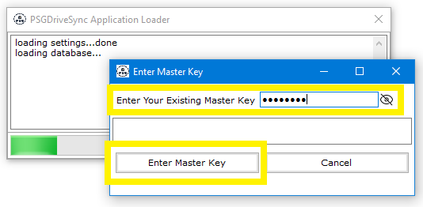
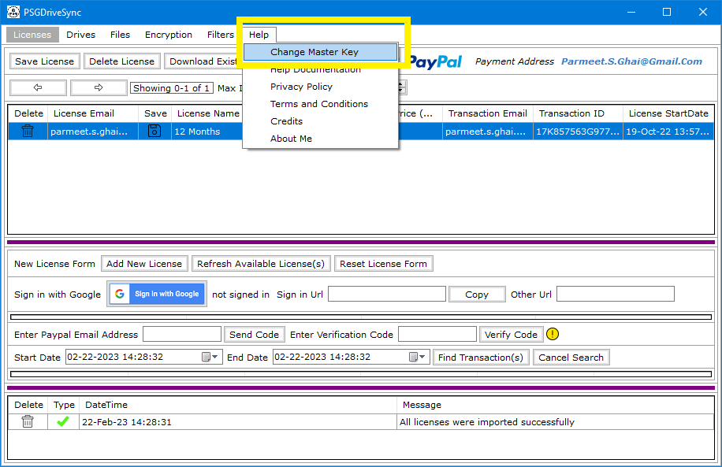
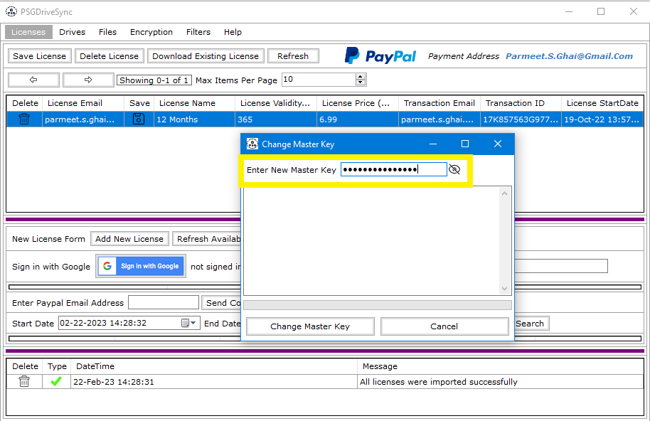
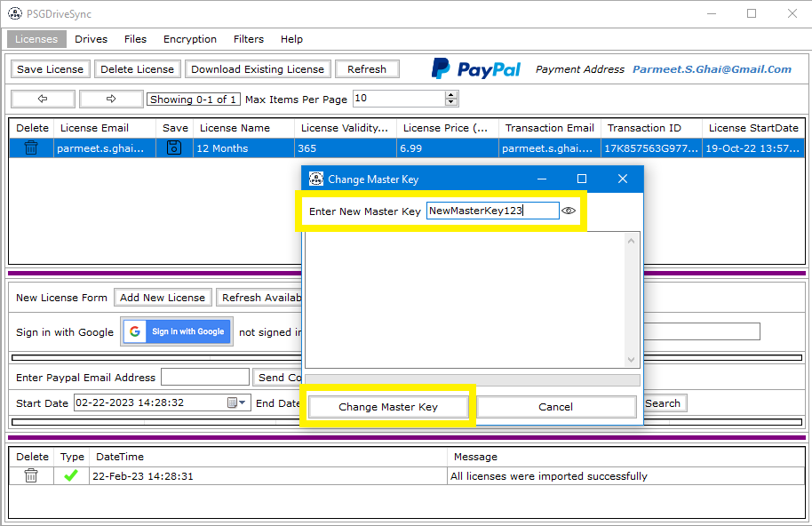
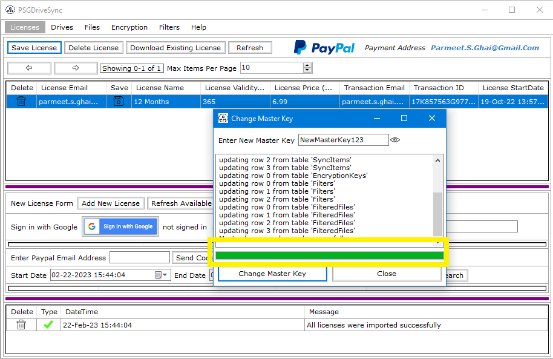

Changing the master key is a straight forward process and can be done at anytime but the process requires you to start the application first with your existing master key. If you have forgotten your master key then this process will not work for you and you would have to start all over again with a new database.
|
1 |
Start the application by double clicking on "PSGDriveSync.exe". That should open the application launcher along with a pop up box containing a text box saying "Enter your Existing Master Key". Enter your existing master key and press "Enter". |
 |
|
2 |
Click on "Help" tab and then "Change Master Key" tab. |
 |
|
3 |
Type in a new master key in the "Change Master Key" box. |
 |
|
4 |
To make sure that you have type in the correct key, you can go ahead and click on the "visibility" icon and see what you have typed in. When you are satisfied with what you have typed in then press "Enter" or click on the Button saying "Change Master Key". |
 |
|
5 |
Wait for the process to complete and then click on "Close" on the "Change Master Key" box. |
 |